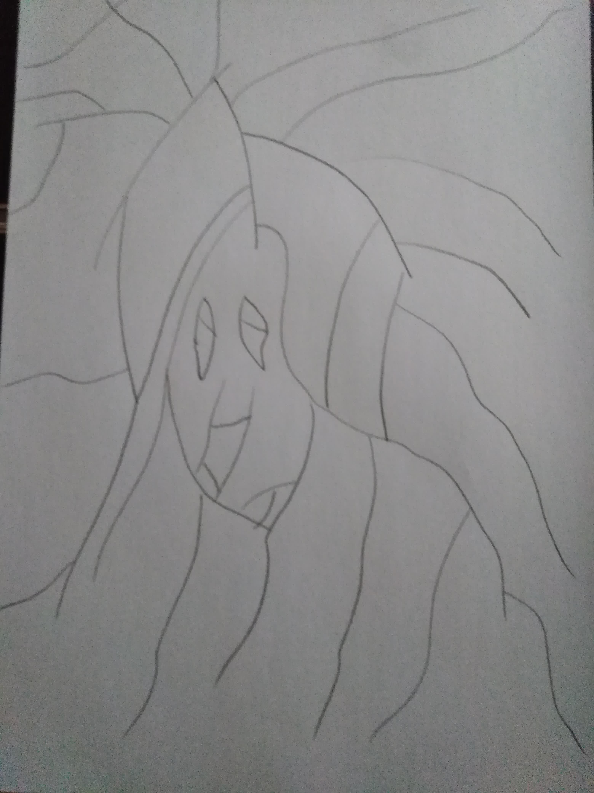
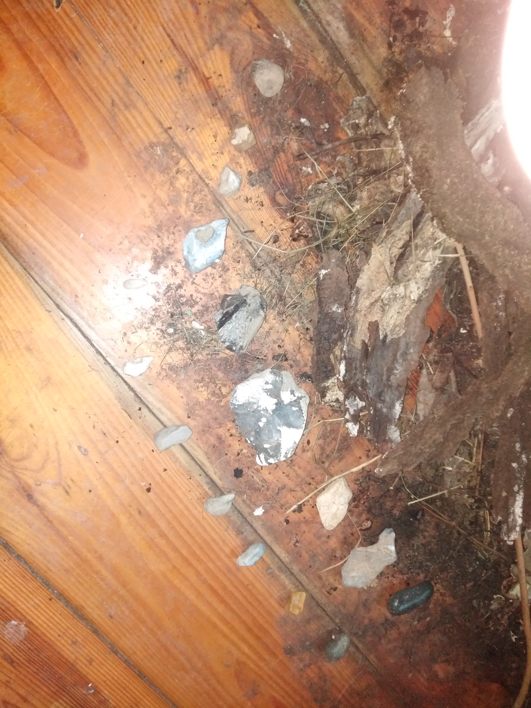

Obraz, kamienie, fotka
Co łączy te trzy rzeczy? :)

Namalowałem obraz, który przedstawia kobietę wpatrzoną w dal. Styl wiadomo, abstrakcja. Szkicowanie ołówkiem to też malowanie więc się nie przejęzyczyłem.
Kobieta patrzy w dal. Być może szuka czegoś, być może po prostu sobie patrzy. W tle widać słońce, obłok.
Patrzenie na coś symbolizuje perspektywy. Kobieta jako człowiek widzi perspektywę. W życiu ważne jest żeby to co robimy miało jakieś perspektywy. Idąc drogą perspektywa jest ważna, bo widzimy mniej więcej gdzie się znajdujemy.

Kto zgadnie co za kamienie są pokazane na fotce? Dodam tylko, że dwa kamienie po prawej, na górze i na dole te takie czarne oszlifowane służyły do dawnych wierzeń katolickich, z czego jeden ma znaczenie duchowe.
Wśród nich znajduje się m.in. złoto Hammurabiego, które przewoził w tym regionie tak na moje oko. ;) Dalej nic nie mówię.
Fotka 14.03.2024 r. Warto rozwijać swoje pasje. W tle burdel, parę suplementów, miska, śrubokręty, klucze i rower.